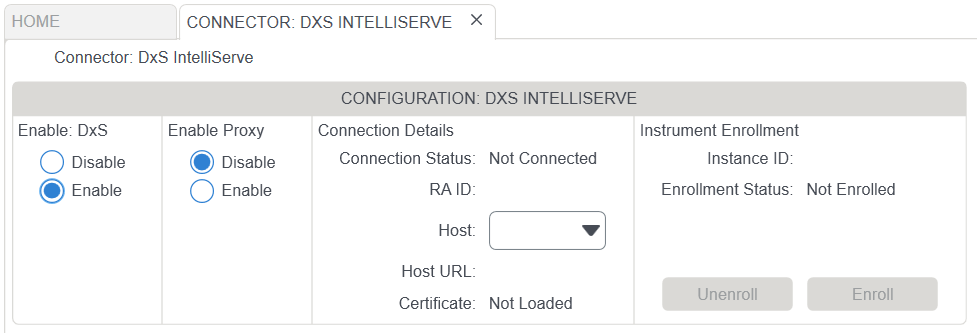

Troubleshooting DxS IntelliServe Enrollment Issues
This topic includes information about how to troubleshoot issues enrolling the DxI 9000 on DxS IntelliServe.
Troubleshooting the Instance ID
Perform this procedure to troubleshoot when Instance ID is blank within the Instrument Enrollment portion of the Configuration: DxS IntelliServe pane on the Connector: DxS IntelliServe page in the Console App.

- Go to to open the System Configuration page.
- Go to to open the Contact Information pane.
- In Instance ID type the instance ID. While you type, the Text Input dialog will be displayed. Select Done.
Troubleshooting the Connection Status
Perform this procedure to troubleshoot when Connection Status is Not Connected within the Connection Details portion of the Configuration: DxS IntelliServe pane on the Connector: DxS IntelliServe page in the Console App.
- Confirm the Host and Host URL are correct.
- Select the SYSTEM even indicator to open the System Events page and to look for Communications events.
- Confirm the EdgeMax router has been configured correctly. See Configuring the EdgeMax Router for more information.
- Confirm the network settings for the firewall have been configured correctly. See the DxS IntelliServe service manual for more information.
- Confirm the customer has made the provisions for their network firewall as stated in the Remote Connections Form.
- Test the connection using Windows PowerShell. See Testing the Connection Using Windows PowerShell for more information.
Testing the Connection Using Windows PowerShell
Perform this procedure to test the DxS IntelliServe connection using Windows PowerShell.
- Press the Windows key and type windows powershell to open Windows PowerShell.
- Type the following prompts to receive the following expected notifications.
Prompt Expected Notification ping 192.168.150.254 Four Reply from notifications. Test-NetConnection global.azure-devices-provisioning.net -port:443 TcpTestSucceeded : True Test-NetConnection DxS-IntelliServe-iot-hub.azure-devices.net -port:443 TcpTestSucceeded : True Test-NetConnection intelliservedatalake.blob.core.windows.net -port:443 TcpTestSucceeded : True Test-NetConnection dxs-intelliserve-relayservice.servicebus.windows.net -port:443 TcpTestSucceeded : True telnet proxy.intelliserve.beckmancoulter.com 443 blank telnet screen
Press CTRL + C to exit
Troubleshooting the Enrollment Status
Perform this procedure to troubleshoot when Enrollment Status is Not Enrolled within the Instrument Enrollment portion of the Configuration: DxS IntelliServe pane on the Connector: DxS IntelliServe page in the Console App.
- Confirm the Host and Host URL are correct.
- Select the SYSTEM even indicator to open the System Events page and to look for Communications events.
- See the following Advisor cases for PROService RMS for more information:
- K55575091 – DxS IntelliServe Network Connection and Enrollment Troubleshooting
- K00682407 – Testing Customer Firewall and Azure Connections for IntelliServe Enrollments
Escalating Enrollment Issues
- Screenshot of RMS Connector page
- Screenshot of EdgeMax dashboard
- Screenshot of System Events page
- The RMSConnectorAgent.log file, which can be found at D:\ProgramData\Beckman Coulter\Logs\Agents\RMSConnectorAgent\
For issues related to DxI 9000 software, the Connection Status, enrollment, or the EdgeMax router and firewall, contact the Engineering Technical Support Organization (ETSO). See Contacting the Engineering Technical Support Organization (ETSO).
For issues related to the customer network, customer firewall, RDS, the IntelliServe dashboard, or data, contact DxS Global Remote Solutions Support at RemoteSolutionsSupport@beckman.com.